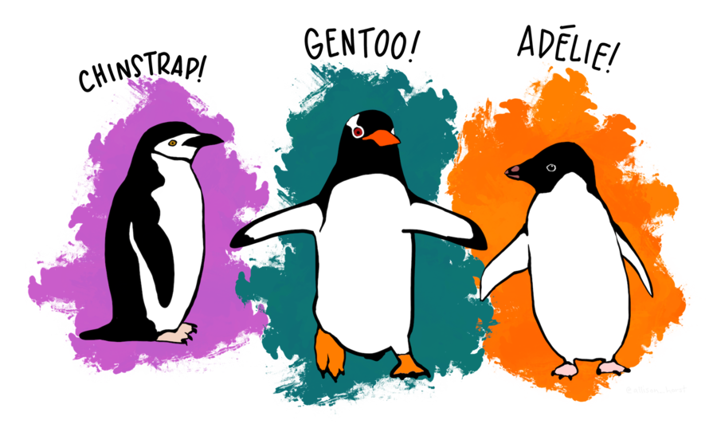

Introduction
In the last tutorial we learned how to you the dplyr package to manipulate data by filtering using dplyr::filter(), selecting columns using dplyr::select(), and creating new columns with the dplyr::mutate() function.
This week’s tutorial will be in two parts. In Part One we’ll learn how to create summarises of dataset using the dplyr package. Many of the summarises that we’ll be creating will involve multiple steps where we use the output from step as the input for the next step. In Part Two we’ll learn how we can chain together multiple steps using the pipe operator %>%.
Once again, we’ll be working with the penguins data.

Part One: Creating summarises
The first thing we’ll learn about is how to create summaries of data. Summaries that you might want to make include working out the mean, the standard deviation, or working out the sample size. To do this, we’ll be using the dplyr::summarise() function together with functions that produce statistical summarises: mean() (for the mean), sd() for the standard deviation, and n() for the sample size.
The dplyr::summarise() function
The dplyr::summarise() takes a dataset and collapses all the rows down into a single row of summarises. Because dplyr::summarise() creates summarises, it is mainly used in combination with functions that produce statistical summarises—that is, functions like mean() and sd().
Let us take a look at a first example of dplyr::summarise() at work. We’ll again be using the penguins dataset that we used in the previous tutorial. Run the code below to take a look at the data again.
penguinsThe data contains a column called body_mass_g which is the body mass of each penguins. Let’s say that we’d like to work out the average mass of the penguins. How would we do this?
We could use the mean() function, because the mean() function works out averages. And we’d want to use the values inside the body_mass_g column as the input to this function. If the values inside the body_mass_g column where in their own object called body_mass_g then we might write something like this (note: we use na.rm = TRUE because that column contains some missing values):
mean(x = body_mass_g, na.rm = TRUE)Now let’s try use that with the dplyr::summarise() function. Below is an example of what that would look like. It might look long and complicated, so we’ll break it down into parts.

We’ll start with the
dplyr::summarise()part: This is just tellingRthat we’d like to produce a summary!Next, inside the
()we have.data = penguins: This means that we’ll like to produce a summary of the data inside the object calledpenguinsNext, we have the part that says
average_mass = mean(x = body_mass_g, na.rm = TRUE)The first part,
average_mass, means that we want our summary to be in a column calledaverage_massThe second part,
mean(x = body_mass_g, na.rm = TRUE)is the command to actually work out the summary
dplyr::summarise(.data = penguins, average_mass = mean(x = body_mass_g, na.rm = TRUE))As you can see from the example, the output is a new dataset with a single row and a single column called average_mass.
You’ll notice that the syntax is very similar to the syntax used with dplyr::mutate() although the output is very different. Just to contrast, let us look at what would happen if we replaced dplyr::summarise() with dplyr::mutate(). Run the example to check it out.
dplyr::mutate(.data = penguins, average_mass = mean(x = body_mass_g, na.rm = TRUE))As you can see, dplyr::mutate() also produces a new column called average_mass that is also the average of the values in the body_mass_g column. But instead of collapsing the dataset down into a single row of summaries it just appends that column to the dataset. The output from dplyr::summarise() will only contains columns that were created as part of the call to the summarise function. In contrast dplyr::mutate() will add new columns without getting rid of the ones that already exist.
Grouping a dataset
The dplyr::summarise() function isn’t super useful by itself, but where it really shines is when it’s paired with the dplyr::group_by() function.
The dplyr::group_by() groups rows in a dataset according to the values in a specified column or columns. When you use the dplyr::group_by function by itself it might difficult to tell whether anything has happened. In the two examples below, you can see the output that would be produced if you just typed the name of the dataset into the R Console.
> penguins
# A tibble: 344 x 8
species island bill_length_mm bill_depth_mm flipper_length_mm body_mass_g sex year
<fct> <fct> <dbl> <dbl> <int> <int> <fct> <int>
1 Adelie Torgersen 39.1 18.7 181 3750 male 2007
2 Adelie Torgersen 39.5 17.4 186 3800 female 2007
3 Adelie Torgersen 40.3 18 195 3250 female 2007
4 Adelie Torgersen NA NA NA NA NA 2007
5 Adelie Torgersen 36.7 19.3 193 3450 female 2007
6 Adelie Torgersen 39.3 20.6 190 3650 male 2007
7 Adelie Torgersen 38.9 17.8 181 3625 female 2007
8 Adelie Torgersen 39.2 19.6 195 4675 male 2007
9 Adelie Torgersen 34.1 18.1 193 3475 NA 2007
10 Adelie Torgersen 42 20.2 190 4250 NA 2007
# … with 334 more rowsAnd this is what would be produced if you used the dplyr::group_by function. We’ll break down the command shortly, but let’s just look at the output first.
> dplyr::group_by(.data = penguins, species)
# A tibble: 344 x 8
# Groups: species [3]
species island bill_length_mm bill_depth_mm flipper_length_mm body_mass_g sex year
<fct> <fct> <dbl> <dbl> <int> <int> <fct> <int>
1 Adelie Torgersen 39.1 18.7 181 3750 male 2007
2 Adelie Torgersen 39.5 17.4 186 3800 female 2007
3 Adelie Torgersen 40.3 18 195 3250 female 2007
4 Adelie Torgersen NA NA NA NA NA 2007
5 Adelie Torgersen 36.7 19.3 193 3450 female 2007
6 Adelie Torgersen 39.3 20.6 190 3650 male 2007
7 Adelie Torgersen 38.9 17.8 181 3625 female 2007
8 Adelie Torgersen 39.2 19.6 195 4675 male 2007
9 Adelie Torgersen 34.1 18.1 193 3475 NA 2007
10 Adelie Torgersen 42 20.2 190 4250 NA 2007
# … with 334 more rowsThey look very similar! But if you look closely you’ll see that there’s an extra line in the output (highlighted in yellow). This tells you that the dataset is now grouped, that it’s grouped by the values in the species column, and that there are 3 of these groups.
Let’s look at the command that we used to produce that output again. The dplyr::group_by() also takes an input called .data which is the name of the data set we want to do the grouping on. The next input is the just name of the column (or columns) we want to use as our grouping variable. Writing species means we want to group our data set according to the values in the species column.
Working with a grouped dataset
When we have a grouped dataset it behaves a little differently to a dataset that isn’t grouped. When we use a function like dplyr::summarise() or dplyr::mutate() on grouped data then the function is applied to each group separately. Let’s see how this works. The example below has 2 steps. In step 1 (on line 1) the penguins dataset is grouped by species. The output is saved to a new object called penguins_grouped. In step 2 (on line 3) the dplyr::summarise() function is used with the penguins_grouped dataset as the input. Run the example to see the output!
penguins_grouped <- dplyr::group_by(.data = penguins, species)
dplyr::summarise(.data = penguins_grouped, average_mass = mean(x = body_mass_g, na.rm = TRUE))You’ll notice line 2 is very similar to the first example when we used dplyr::summarise() on the penguins dataset. Run the example just to refresh yourself on what the output looks like!
dplyr::summarise(.data = penguins, average_mass = mean(x = body_mass_g, na.rm = TRUE))Notice the difference in the output between Example 1 and Example 2. In Example 2 there’s only one summary row, but in Example 1 there’s 3 summary rows. There’s a summary row for each group. You’ll also notice that in Example 2 there’s only one column—the column that was created by the call to dplyr::summarise(). In Example 1, however, there’s two columns—the column that was created by the call to dplyr::summarise() and the column that holds the grouping variable. In all the exercises we’ll always use dplyr::summarise() with dplyr::group_by()
Types of summaries
For far, we’ve only been working out means, but there are other summaries we could be working out. In this section, we’ll go through a few of them.
Standard deviations
To work out a standard deviation, we just replace mean() with sd(). In the example before, we’ll still work out the mean, but we’ll add in a new column that contains the standard deviation. Notice that we can start a new line after a commas. This doesn’t impact how the function runs, but it makes it a little easier for us to read. As before, we’ll first group the data, and then run the dplyr::summarise() function on the grouped data. Run the example to see the output.
penguins_grouped <- dplyr::group_by(.data = penguins, species)
dplyr::summarise(.data = penguins_grouped,
average_mass = mean(x = body_mass_g, na.rm = TRUE),
sd_mass = sd(x = body_mass_g, na.rm = TRUE))Interquartile range
To work out the interquartile range, we’d just use the IQR() function. In the example below, a new column had been added to hold the IQR.
penguins_grouped <- dplyr::group_by(.data = penguins, species)
dplyr::summarise(.data = penguins_grouped,
average_mass = mean(x = body_mass_g, na.rm = TRUE),
sd_mass = sd(x = body_mass_g, na.rm = TRUE),
IQR_mass = IQR(x = body_mass_g, na.rm = TRUE))Counting cases
After from summaries, we might also want to count the number of rows in each group. If we group our data by species then counting the number of rows in each group will tell you how many penguins of each species our data contains. To count the number of rows we’ll use a function called n(). The n() function is a little bit special, because it doesn’t take any inputs. In the example below we’ll count the number of penguins in each species group and put that information in a column called penguins_per_species. Run the example to see the output.
penguins_grouped <- dplyr::group_by(.data = penguins, species)
dplyr::summarise(.data = penguins_grouped, penguins_per_species = n())Summarising and calculating
We can get even more fancy if we’d like by mixing summary functions with calculations. Why might this be useful? One obvious example is if we’d like to calculate a standard error. To calculate a standard error you need two bits of information. You’ll need the standard deviation and the sample size. You can get these with the sd() and n() functions, respectively. The standard errors is then calculated as \(\frac{sd}{\sqrt{n}}\). The example below we’ll calculate the standard error for each species of penguins. Again, we’ll first group the data by species and then perform the summary on the grouped data. The only new code in this example is the last line. In this line we’ll use the columns that hold the summary values in a calculation.
penguins_grouped <- dplyr::group_by(.data = penguins, species)
dplyr::summarise(.data = penguins_grouped,
sd_mass = sd(body_mass_g, na.rm = TRUE),
penguins_per_species = n(),
se_mass = sd_mass / sqrt(penguins_per_species))Code Exercises
Now it’s your turn to try it out.
Work out the average mass for the penguins on each of the islands:grouped <- dplyr::group_by(.data = penguins, )grouped <- dplyr::group_by(.data = penguins, island)grouped <- dplyr::group_by(.data = penguins, island)
dplyr::summarise(.data = grouped, )grouped <- dplyr::group_by(.data = penguins, island)
dplyr::summarise(.data = grouped, mean_mass = mean(body_mass_g, na.rm = TRUE))Now work out the average flipper length of each sex of each species! (Hint: you’ll been to group by two columns!)
grouped <- dplyr::group_by(.data = penguins, )grouped <- dplyr::group_by(.data = penguins, sex, species)grouped <- dplyr::group_by(.data = penguins, sex, species)
dplyr::summarise(.data = grouped, )grouped <- dplyr::group_by(.data = penguins, sex, species)
dplyr::summarise(.data = grouped, mean_flipper_length = mean(flipper_length_mm, na.rm = TRUE))Part Two: Pipes %>%
In summarising data section we were using the dplyr::summarise() function together with the dplyr::group_by() function in a two step operation.
In Step 1 we grouped the dataset with dplyr::group_by() and saved the output to a new dataset:
penguins_grouped <- dplyr::group_by(.data = penguins, species)Then in Step 2 we used this new dataset (penguins_grouped in the example above) as the input for Step 2:
penguins_grouped <- dplyr::group_by(.data = penguins, species) dplyr::summarise(.data = penguins_grouped, average_mass = mean(x = body_mass_g, na.rm = TRUE))Writing out multi-step operations like this is not very efficient, and it means we have to write out lots of temporary variables. An alternative would be to nest the steps inside each other. Below you can see Step 1 (highlighted in yellow) nested inside Step 2.
dplyr::summarise(.data = dplyr::group_by(.data = penguins,
species), average_mass = mean(x = body_mass_g, na.rm =
TRUE))When the steps are nested, there’s only one line but it’s very difficult to follow and understand code like this when we read it. But there is another way!
Using the pipe operator %>% we can join steps together in a linear order. When steps are joined together with %>% then the output from one step can be used as the input for the next step. Let’s see in it action! First, a refresher of what the 2 step example looks like.
penguins_grouped <- dplyr::group_by(.data = penguins, species)
dplyr::summarise(.data = penguins_grouped, average_mass = mean(x = body_mass_g, na.rm = TRUE))The output from step 1 (called penguins_groups) goes into the .data argument at Step 2. When we use the pipe, we don’t need to save the output from Step 1 as an object. Instead, we put a %>% after the command to tell R that we want to use the output at the next step. This is how we would now write the first step:
dplyr::group_by(.data = penguins, species) %>%Once we’ve written the first step, then we can add the second step. The only trick to writing the second step is to tell R where to send the output from step 1. We know that we want it to go to the argument called .data, so we just use a . to tell R to send the output there. Adding Step 2, the command now looks like example below. With Step 1 highlighted in yellow and Step 2 highlighted in blue.
dplyr::group_by(.data = penguins, species) %>%
dplyr::summarise(.data = ., average_mass = mean(x = body_mass_g, na.rm = TRUE))TIP: When chaining together operations with %>% the lines of code can sometimes get very long. To make the code easier to read you can start a new line after the %>%.
If you run the example you’ll see that it produces the same output as the second step of two step example above.
dplyr::group_by(.data = penguins, species) %>%
dplyr::summarise(.data = ., average_mass = mean(x = body_mass_g, na.rm = TRUE))Assigning the output to an object
When you join steps with the %>% the output that you see is always the output from the final step. The whole processes now becomes like a single command! If we want to save that output as an object we do it in just the same way as we’ve done it for any other command—by putting an object name and a <- at the start of the line. Below you can see the output saved to a object called penguins_summary
penguins_summary <- dplyr::group_by(.data = penguins, species) %>%
dplyr::summarise(.data = ., average_mass = mean(x = body_mass_g, na.rm = TRUE))Code Exercises
Now it’s your chance to try. We’ll do the exact same problems as in Part One. But now I’d like you to try solve them using the %>%
Work out the average mass for the penguins on each of the islands:
dplyr::group_by(.data = penguins, )dplyr::group_by(.data = penguins, island)dplyr::group_by(.data = penguins, island) %>% dplyr::summarise(.data = ., )dplyr::group_by(.data = penguins, island) %>% dplyr::summarise(.data = ., mean_mass = mean(body_mass_g, na.rm = TRUE))Now work out the average flipper length of each sex of each species! (Hint: you’ll been to group by two columns!)
dplyr::group_by(.data = penguins, )dplyr::group_by(.data = penguins, sex, species)dplyr::group_by(.data = penguins, sex, species) %>% dplyr::summarise(.data = grouped, )dplyr::group_by(.data = penguins, sex, species) %>%
dplyr::summarise(.data = ., mean_flipper_length = mean(flipper_length_mm, na.rm = TRUE))